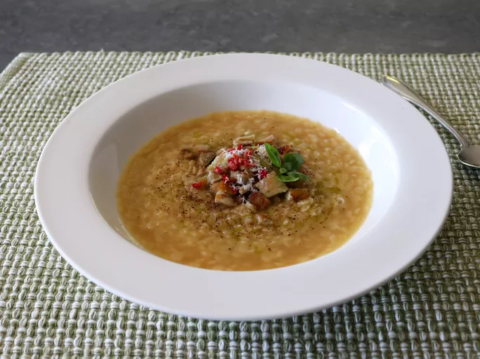

Biryani

Description
Chef John's chicken pastina is like a big, warm hug from an Italian grandma, a comfort food that will, quite literally, change your mood. You can make this simple soup with a fortified broth if you have the time, or simply use off-the-shelf chicken broth for the 15-minute version.
Ingredients
- 4 cups chicken broth
- salt to taste
- 1 cup stelline pastina, or other pastina
- freshly ground black pepper to taste
- 2 tablespoon unsalted butter
- 3/4 cup finely grated Parmigiano Reggiano cheese
- extra-virgin olive oil
Steps
- Bring broth to a simmer over medium-high heat. Taste; season with salt if needed.
- Reduce heat to medium, and stir in pastina. Cook, stirring occasionally, for about 30 seconds less than the package directions, 5 to 8 minutes.
- Turn off heat, and stir in black pepper, butter, and grated cheese. Stir constantly until butter disappears.
- Ladle pastina into hot bowls, top with more freshly ground black pepper and Parmigiano Reggiano, and drizzle with olive oil.